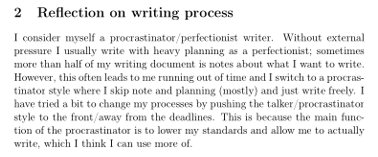
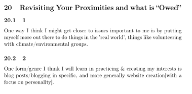
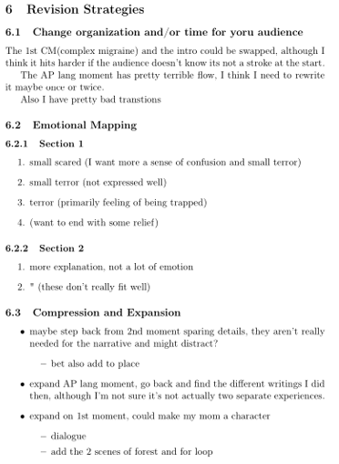
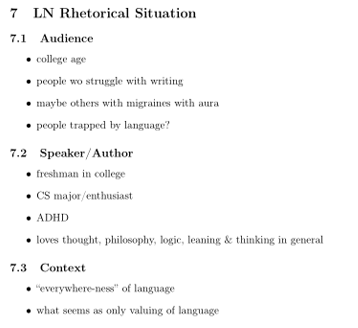

Throughout the semester, working on the opening writes at the start of class helped me more quickly shift gears to English, even if at the start of the semester I was writing very little or very poorly. As the semester went on, this constant, varied, relatively low-stakes writing helped me get better at writing "loosely" to just get thoughts flowing and words on a page, a skill I often struggle with. Additionally, having these snapshots of what I was thinking at the start of class occasionally helped me to get back into an English state of mind outside of class when working on assignments.



